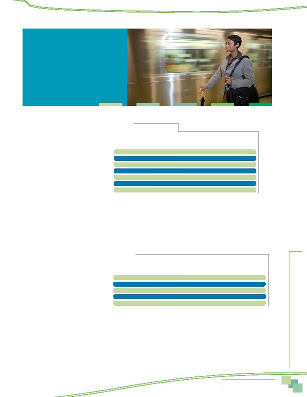

4 2
MWCOG-Comm
uter Conn
ecti
on
s-- 2010 State o
f th
e Comm
ute Report
4 3
Services Offered by Employer
Location
Finally, the analysis examined the
availability of services by respondents' work
locations, divided into the three "ring"
designations described earlier: Inner Core
(Alexandria, Arlington, and the District of
Columbia), Middle Ring (Fairfax, Montgomery,
and Prince George's), and Outer Ring (Calvert,
Charles, Frederick, Loudoun, and Prince
William). As shown in Table 18, Inner Core
respondents had greater access to incentive/
support services than did other respondents.
Three-quarters of Inner Core workers said they
had commute services, while only half of Middle Ring workers and 40% of Outer Ring workers had access to these services.
Inner Core workers also had greater access to each individual service; two-thirds of these respondents were offered tran-
sit subsidies, compared to a third of respondents who worked in the Middle Ring, and only 14% of respondents who worked
in the Outer Ring. Inner Core workers had somewhat higher access to other commute services also. These differences were
less dramatic, but there was a clear pattern of highest availability in the Inner Core, moderate availability in the Middle
Ring, and significantly lower availability of most services in the Outer Ring.
PARKING FACILITIES AND SERVICES
Respondents also were asked about the
parking services available at their worksites.
These results are displayed in Table 19 for
2010, 2007, and 2004.
The majority of respondents (63%) across
the region said their employers provided "free
parking" at the worksite. An additional two
percent said they had access to "free parking
off-site." About three in ten said they paid at
least part of the cost of parking; 22% paid the
total cost and seven percent paid a portion of
the cost with the balance paid by their employers. The availability of free parking appears to be the same as in 2007 and 2004.
Parking by Employer Type
Federal agency workers and respondents who worked for non-profit organizations were
least likely to have free parking at work. About 49% of respondents who worked for federal agencies and 50% of respon-
dents who worked for a non-profit said their employer provided free parking. Other workers in these two groups either had
no parking at all or had to pay all or part of the cost of parking. By contrast, 77% of respondents who worked for state and
local agencies and 71% of respondents who worked for private employers said they had free parking.
Table 18
Commuter Services Offered
by Employer Location
Incentives/Support Services
Percentage of Employers Offering Service
Inner Core
Middle Ring Outer Ring
Any services offered
74% 53% 40%
Transit subsidy
65% 31% 14%
Commute information
33% 27% 17%
Preferential parking
27% 22% 13%
GRH
16% 15% 15%
Carpool subsidy/cash payment
10%
8%
4%
Bike/walk services
28% 21% 14%
Table 19
Parking Facilities/Services Offered by Employers 2010, 2007, 2004
Parking Facilities and Services
Employer Offered Service
2010 SOC
2007 SOC
2004 SOC
Free on-site parking
63% 65% 66%
Free off-site parking
2% 4% 3%
Employee pays all parking charges
22%
21%
21%
Employee and employer share parking charge 7%
7%
6%
Parking discounts for CP/VP*
16% 15% 14%
*Note that percentages of parking discounts for CP/VP are calculated on a base of respondents who do
not have free parking available.
Employer-Provided
Commuter Assistance Services
...availability of transit/
vanpool subsidies has grown
substantially, from 33% to
45% since 2007.